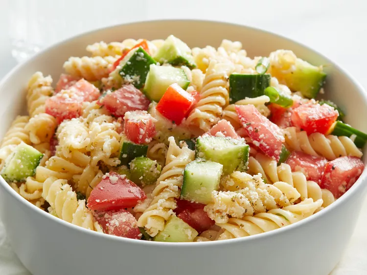

Home
Simple pasta salad

Description
An easy pasta salad with Italian dressing, simple yet very yummy.
Almost any type of pasta may be used. Best if left to sit overnight.
Ingredients
- 1 (16 ounce) package uncooked rotini pasta
- 1 (16 ounce) bottle Italian salad dressing
- 2 cucumbers, chopped
- 6 tomatoes, chopped
- 1 bunch green onions, chopped
- ounces grated Parmesan cheese
- 1 tablespoon Italian seasoning
Steps
- Gather all ingredients.
- Bring a large pot of lightly salted water to a boil.
- Place pasta in the pot, cook for 8 to 12 minutes, until al dente, and drain.
- Toss cooked pasta with Italian dressing, cucumbers, tomatoes, and green onions in a large bowl.
- Mix Parmesan cheese and Italian seasoning in a small bowl, and gently mix into the salad.
- Mix Parmesan cheese and Italian seasoning in a small bowl, and gently mix into the salad.
- Cover, and refrigerate for at least 30 minutes before serving.
- Enjoy!